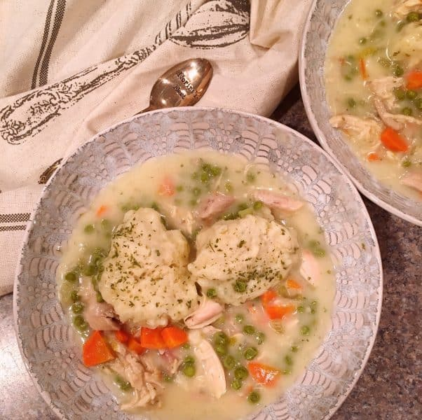

Chicken and Dumplings

This is a great creamy and delicious meal that will leave you craving more! Great meal for the winter time to
warm your soul.
Ingedients:
Dumplings Mix:
- ¾ cup milk
- 3 tablespoons butter
- 2 cups all-purpose flour
- 1 tablespoon baking powder
- 1 tablespoon chopped fresh parsley
- ¾ teaspoon salt
- ¼ cup club soda
Chicken Mixture:
- 3 cups chicken stock
- 1 (10.75 ounce) can condensed cream of chicken soup
- 3 medium skinless, boneless chicken breast halves
- 2 potatoes, cubed
- 1 yellow onion, diced
- 1 rib celery, diced
- ½ cup diced carrot
- ½ green bell pepper, seeded and chopped
- ½ (10 ounce) package frozen peas, thawed (Optional)
- 1 lemon, thinly sliced (Optional)
- 1 sprig fresh thyme
- 1¾ cups heavy cream
- salt and ground black pepper to taste
- 2 tablespoons butter
- 1 cup chopped morel mushrooms
- 1 tablespoon chopped fresh parsley, or to taste
- 1 tablespoon chopped green onion, or to taste
Steps
- Heat milk and butter for dumplings in a small saucepan over medium heat until butter melts, 2 to 3 minutes.
Remove from heat.
- Combine flour, baking powder, parsley, and salt in a bowl. Stir in club soda and milk mixture until dough
forms a ball, making sure not to overmix. Cover dumpling dough and let stand for 30 minutes.
- Combine chicken stock and cream of chicken soup in a large saucepan or Dutch oven. Bring to a simmer over
medium-high heat. Add chicken, potatoes, onion, celery, carrot, bell pepper, peas, lemon, and thyme. Poach
until chicken is no longer pink in the centers and vegetables are tender, about 12 minutes. Transfer chicken
to a plate to cool; transfer vegetables to a bowl, leaving stock in the pan. Discard thyme and lemon.
- Boil remaining stock over medium-high heat until reduced by 1/3, 5 to 7 minutes.
- Meanwhile, pour cream into a small saucepan and heat over medium-high heat. Cook until reduced by about 1/2,
7 to 10 minutes. Whisk into reduced stock. Season with salt and pepper and set aside.
- Chop cooled chicken into bite-sized pieces.
- Melt butter in a small skillet over medium-high heat. Add mushrooms, season with salt and pepper, and saute
for 2 to 3 minutes. Stir into stock mixture and add chicken and cooked vegetables.
- Bring soup to a simmer over medium heat, adding more stock if necessary. Drop dumpling dough by teaspoons
into the mixture. Cover and let simmer for 7 to 8 minutes. Serve hot garnished with parsley and green onion.